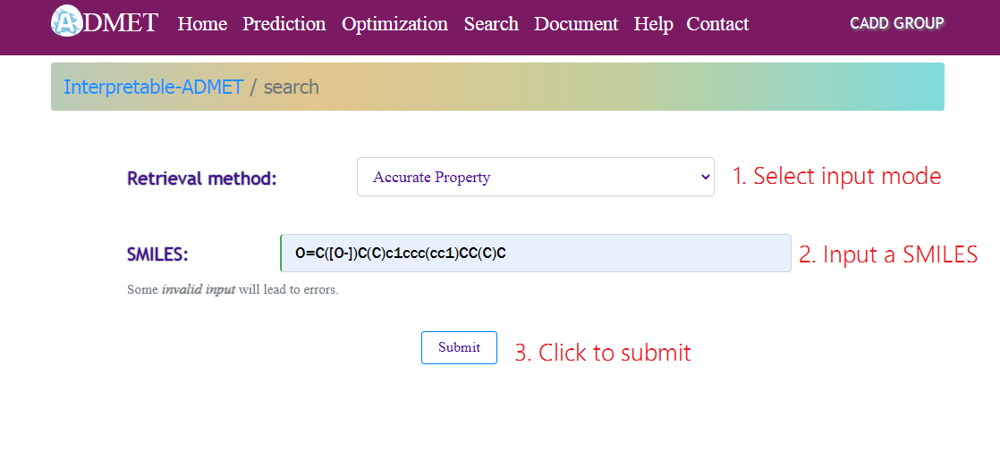
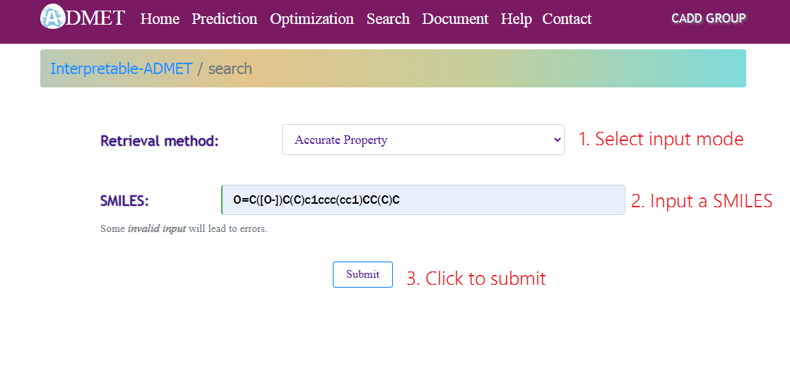
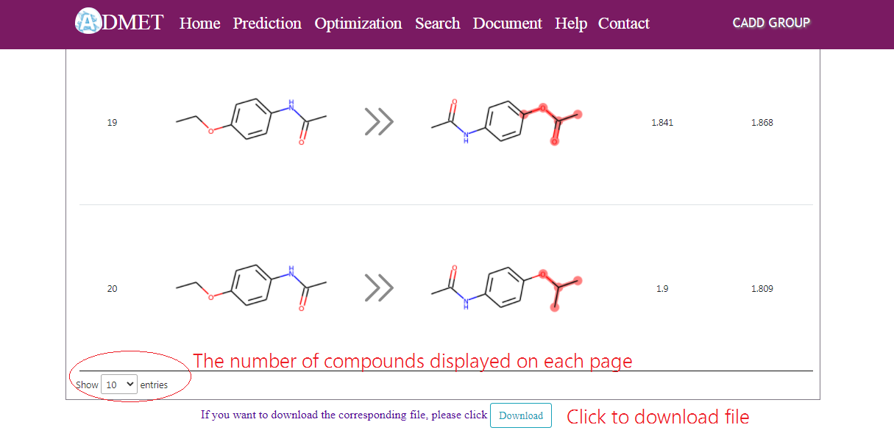
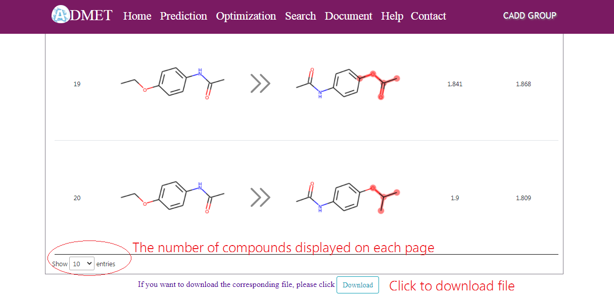

Interpretable-ADMET Help
1. The homepage contains nine pull-down menus: home, prediction, optimization, search, document, help and contact in the toolbar, and users can browse relevant entries by clicking their sub-menus. The corresponding entries will be displayed.
2. In the search page, a valid SMILES is needed by accurate search to retrieve a specific molecule in interpretable-ADMET database. For range search, the range of specific ADMET property is needed to retrieve a set of molecules that satisfy the criteria set. For similairty search, a query molecule is imported in SMILES format, and the type of fingerprint and Tanimoto threshold should be set to retrieve structurally similar molecules.
 

3. a) In the prediction page, users can input a valid SMILES or draw the compound structure through the JME applet window by selecting the corresponding mode. Then click the submit button to deliver a query molecule to interpretable-ADMET Server. Users will get the predicted value of 46 properties of this compound and its interpretation diagram.


b) The prediction result page presents six classic physiochemical properties and 46 ADMET properties for the query molecule. Click optimization button and jump directly to the optimization page.

4. a) In the optimize page, a query molecule is imported in SMILES format. Users could select a specific ADMET property for optimization. Cutoff threshold is used to select the candidate rule environments and the number of match pairs. Click the submit button to retrieve the optimization results.
b) The optimization result page presents a group of virtual analogues by changing one variable part of a query molecule, as well as calculated specific ADMET property based on GCN and GAT algorithms. Users could further modify the structure of query molecule by clicking and editing structures on the web page. Virtual analogues could be downloaded from the optimization web page.

 

5. We display all the specific data of our models on the document page for users to use and reference. If you have any questions about the data, You can contact us through the email on the contact page.
6. Interpretable-ADMET was only test on the latest version of browser, so please try the latest browser (google chrome , firefox, etc) if you have any display problems.
7. If there are any comments or suggestions, please contact Dr. Jianping Lin at jianpinglin@nankai.edu.cn. For more specific information, please see the contact page.